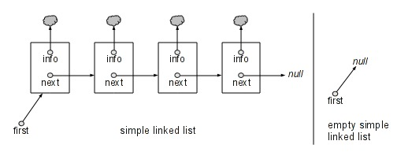
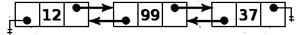
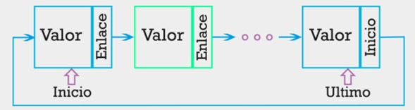
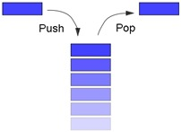

Una lista enlazada es una colección o secuencia de elementos dispuestos uno detrás de otro, en la que cada elemento se conecta al siguiente elemento por un “enlace”. La idea básica consiste en construir una lista cuyos elementos, llamados nodos, se componen de dos partes (campos): la primera parte contiene la información y es, por consiguiente, un valor de un tipo genérico (denominado Dato, TipoElemento, Info, etc.), y la segunda parte es un enlace que apunta al siguiente nodo de la lista.
Se pueden dividir a las listas enlazadas en 4 categorías en las cuales profundizaremos más adelante
Una lista enlazada simple es una estructura de datos en la que cada nodo posee dos elementos, el objeto y el apuntador al siguiente nodo. De este modo, teniendo la referencia del principio de la lista podemos acceder a todos los elementos de la misma.
En las listas simplemente enlazadas, el nodo de la cola que apunta al siguiente es nulo.
Una lista doblemente enlazada es una estructura de datos que consiste en un conjunto de nodos enlazados secuencialmente. Cada nodo contiene tres campos, dos para los llamados enlaces, que son referencias al nodo siguiente y al anterior en la secuencia de nodos, y otro más para el almacenamiento de la información en este caso un entero.
Como ejemplo pensemos que debemos almacenar un menú de opciones en una lista, la opción a seleccionar puede ser la siguiente o la anterior, podemos desplazarnos en ambas direcciones.
En las listas doblemente enlazadas, la referencia al nodo anterior de la cabeza es nulo, de igual forma que la referencia al nodo siguiente de la cola.
Las listas circulares son estructuras de datos en la que el último nodo apunta al primero lo cual la convierte en una lista sin fin, de igual forma cuentan con un nodo inicial y un nodo final. Es útil contar con un criterio de parada cuando se esté navegando por los nodos de la lista para no entrar en un bucle sin fin.
En el caso de las listas circulares sencillas, los nodos solo poseen una referencia al nodo siguiente, mientras que en las listas circulares doblemente enlazadas, los nodos poseen dos referencias, una referencia para el nodo anterior y otra para el siguiente, su estructura es muy similar a las listas simples por lo cual comparten características tanto en su implementación como en su manejo.
Una pila es una lista ordinal o estructura de datos en la que el modo de acceso a sus elementos es de tipo LIFO que permite almacenar y recuperar datos. Esta estructura se aplica en multitud de ocasiones en el área de informática debido a su simplicidad y ordenación implícita de la propia estructura.
Para el manejo de los datos se cuenta con dos operaciones básicas: apilar (push), que coloca un objeto en la pila, y su operación inversa, retirar (o desapilar, pop), que retira el último elemento apilado.
